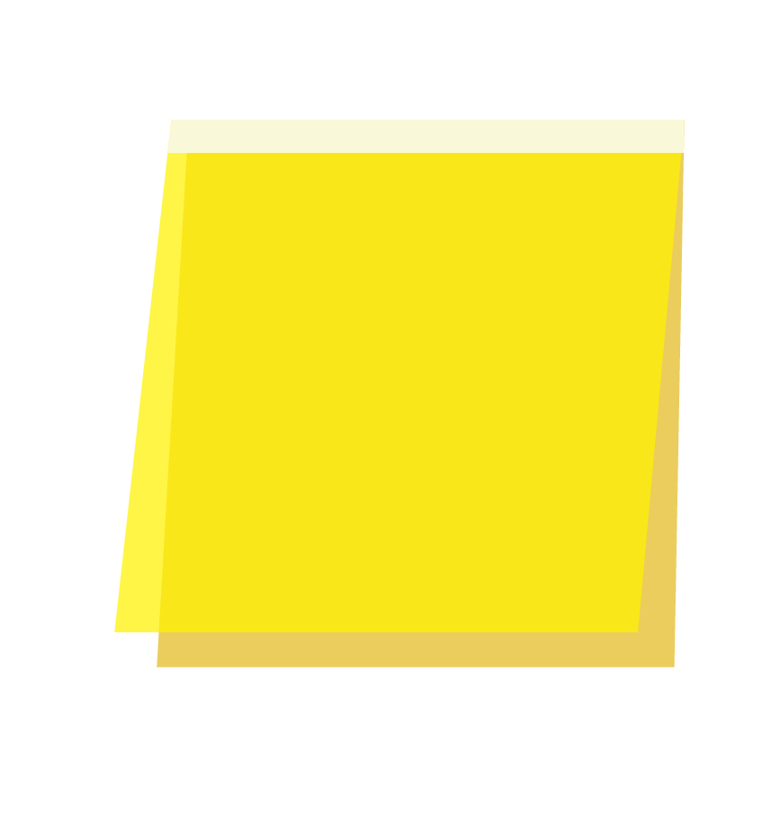
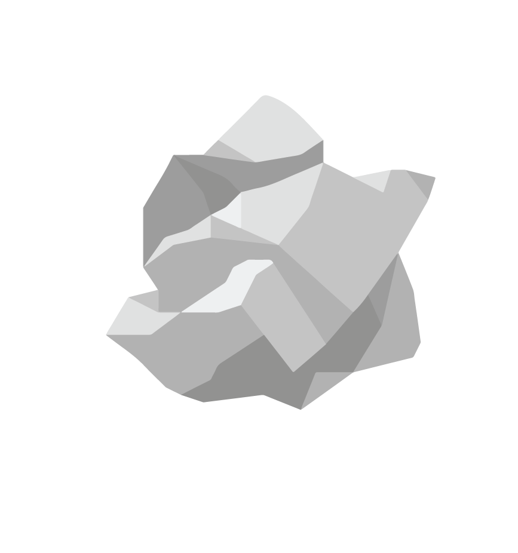
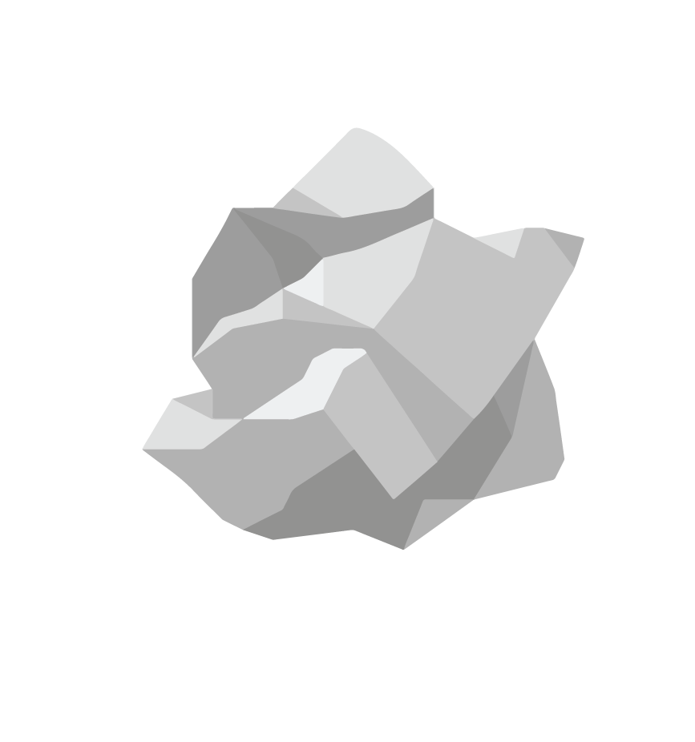

 

Living on the hyphen between an artist and designer,
I never understood where I am headed towards exactly.
At least, for now, I have found myself a place to archive my projects and thoughts. Some may be finished, some may not.
With this interface designed to mimic an ordinary computer desktop, I attempt to shape this as a private space where I, as the user, has created folders and files for myself. However, holding a private space on the internet seems merely impossible…as you drag the folders around and relay through each file, what identity does this action shape you?
*feel free to drag around*
SETTINGS
CONTACT